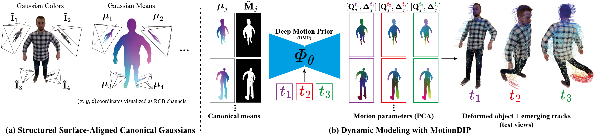

Dynamic scene reconstruction from casual videos has seen recent remarkable progress. Numerous approaches have attempted to overcome the ill-posedness of the task by distilling priors from 2D foundational models and by imposing hand-crafted regularization on the optimized motion. However, these methods struggle to reconstruct scenes from extreme novel viewpoints, especially when highly articulated motions are present. In this paper, we present DRoPS, a novel approach that leverages a static pre-scan of the dynamic object as an explicit geometric and appearance prior. While existing state-of-the-art methods fail to fully exploit the pre-scan, DRoPS leverages our novel setup to effectively constrain the solution space and ensure geometrical consistency throughout the sequence. The core of our novelty is twofold: first, we establish a grid-structured and surface-aligned model by organizing Gaussian primitives into pixel grids anchored to the object surface. Second, by leveraging the grid structure of our primitives, we parameterize motion using a CNN conditioned on those grids, injecting strong implicit regularization and correlating the motion of nearby points. Extensive experiments demonstrate that our method significantly outperforms the current state of the art in rendering quality and 3D tracking accuracy.

DRoPS Overview. (a) We organize our canonical Gaussians into structured pixel grids that reside on virtual cameras surrounding the object, each pixel encoding the parameters of its back-projected 3D Gaussian. (b) To reconstruct the dynamic sequence, we model the object deformation with
Deep Motion Prior (DMP), a CNN that maps canonical positions and timestep encodings to 6-DOF motion parameters.
By utilizing the Deep Motion Prior, DRoPS exploits the spatial inductive bias of convolutional networks to introduce strong regularization to motion modeling and to encourage coherent local motion without relying as heavily on hand-crafted regularization. This results in a geometrically consistent, complete dynamic 3D representation, supporting high-quality novel-view rendering and accurate long-range 3D point tracking, even for highly articulated motions.
Evaluation on the CMU Panoptic Studio dataset [4], which features real-world multi-view captures of complex human motions such as juggling, softball, and tennis. We use a single camera view for training and evaluate novel view synthesis on 30 held-out cameras at extreme viewing angles.
We compare against state-of-the-art optimization-based (HiMoR [1], OriGS [2]) and generative (Cog-NVS [3]) approaches.
DRoPS significantly outperforms the baselines in maintaining a consistent object geometry and sharp appearance, while accurately modeling the scene dynamics.
See more examples here.
Softball
Juggle
Evaluation on our synthetic dynamic animals dataset generated using TrueBones [5] animated characters. Since the data is synthetic, we have access to ground-truth depth and camera parameters, allowing us to validate our approach under controlled conditions.
We compare against state-of-the-art optimization-based (HiMoR [1], OriGS [2]) and generative (Cog-NVS [3]) approaches.
DRoPS significantly outperforms the baselines in maintaining a consistent object geometry and sharp appearance, while accurately modeling the scene dynamics.
See more examples here.
Camel Run
Bat Attack
DRoPS can operate on casual, fully monocular videos where no multi-view pre-scan is available. Instead, the pre-scan is generated from the first video frame using an off-the-shelf image-to-3D model. As shown below, DRoPS achieves high-quality, complete dynamic 3D reconstruction even in this challenging in-the-wild setting. Videos are taken from the DAVIS dataset [6] and the internet.
We ablate the key design choices of our method on the CMU Panoptic Studio dataset [4].
Each row shows the result of removing one component on a held-out test camera. Removing any key component significantly degrades reconstruction quality,
highlighting their contribution.
See the full ablation study here.
Softball — Test Camera 1
DRoPS produces an explicit dynamic 3D representation from which long-range 3D point trajectories emerge naturally.
We compare our 3D tracking against optimization-based baselines HiMoR [1] and OriGS [2],
which also incorporate explcit dynamic 3D representations with deforming Gaussian splats.
The ground-truth positions are visualized as crosses, the predictions as circles, and the lines connecting to them show the error.
DRoPS achieves significantly more accurate long-range 3D tracking than the baselines, while maintaining a consistent object geometry and sharp appearance.
See our paper for quantitative evaluation and more details.
Softball Tracking
Juggle
Coyote
Camel Run
DRoPS enables Text-to-4D generation: given a text prompt describing a dynamic subject, we first generate a video using an off-the-shelf text-to-video model, then apply DRoPS with the in-the-wild pipeline for dynamic 3D reconstruction. The colored lines visualize 3D point trajectories emerging from our representation.
Loading...
BibTeX
@inproceedings{drops2026,
author = {Narek Tumanyan, Samuel Rota Bulò, Denis Rozumny, Lorenzo Porzi, Adam Harley, Tali Dekel, Peter Kontschieder, Jonathon Luiten},
title = {DRoPS: Dynamic 3D Reconstruction of Pre-scanned Objects},
year = {2026},
}
[1] Yiming Liang, Tianhan Xu, Yuta Kikuchi. HiMoR: Monocular Deformable Gaussian Reconstruction with Hierarchical Motion Representation, CVPR 2025
[2] Junyi Wu, Jiachen Tao, Haoxuan Wang, Gaowen Liu, Ramana Rao Kompella, Yan Yan. Orientation-anchored Hyper-Gaussian for 4D Reconstruction from Casual Videos, NeurIPS 2025
[3] Kaihua Chen*, Tarasha Khurana*, Deva Ramanan. Reconstruct, Inpaint, Test-Time Finetune: Dynamic Novel-view Synthesis from Monocular Videos, NeurIPS 2025
[4] Hanbyul Joo, Hao Liu, Lei Tan, Lin Gui, Bart Nabbe, Iain Matthews, Takeo Kanade, Shohei Nobuhara, Yaser Sheikh. Panoptic Studio: A Massively Multiview System for Social Motion Capture, ICCV 2015
[5] TrueBones. truebones.com
[6] Jordi Pont-Tuset, Federico Perazzi, Sergi Caelles, Pablo Arbelàez, Alexander Sorkine-Hornung, Luc Van Gool. The 2017 DAVIS Challenge on Video Object Segmentation, arXiv:1704.00675, 2017